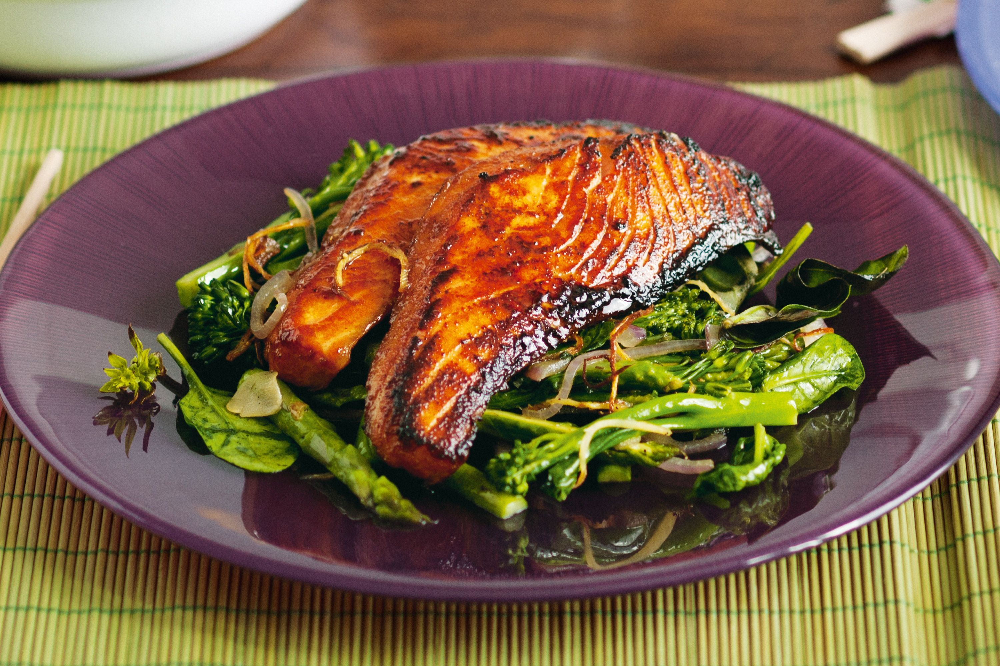

Salmon and Broccolini

A delicious dish full of delectable delicacies for the discerning... patron
Ingredients:
- 4 x 180g pieces salmon fillet, pin-boned, skin on
- 1 tsp Chinese five-spice
- 80g (1/4 cup) hoisin sauce
- 125ml (1/2 cup) peanut oil
- 2 cloves garlic, thinly sliced
- 4cm piece ginger, cut into julienne (matchsticks)
- 1 red onion, thickly sliced
- 1 bunch broccolini, trimmed, halved widthwise
- 1 bunch asparagus, trimmed, halved widthwise
- 40g baby spinach
- 1 cup basil leaves
- 1 tsp sesame oil
- Steamed white rice (optional), to serve
Preparation
Step 1
Using a sharp knife, cut each piece of fish into 3 lengthwise. Place in a large bowl. Add five-spice, hoisin sauce and 2 tablespoons peanut oil. Season with salt and pepper. Gently toss to combine.
Step 2
Heat 1 tablespoon peanut oil in a large frying pan over high heat. Add half the fish and cook for 30 seconds each side for medium-rare or until cooked to your liking. Transfer to a plate. Repeat with another 1 tablespoon peanut oil and remaining fish. Wipe pan clean.
Step 3
Heat remaining 2 tablespoons peanut oil in pan over high heat. Add garlic, ginger and onion, and stir-fry for 2 minutes or until onion is soft. Add broccolini and asparagus, and stir-fry for a further 3 minutes or until vegetables are tender. Remove from heat and stir in spinach, basil and sesame oil, then season.
Step 4
Divide the vegetables and fish among plates. Serve with rice, if using.
Back to Home